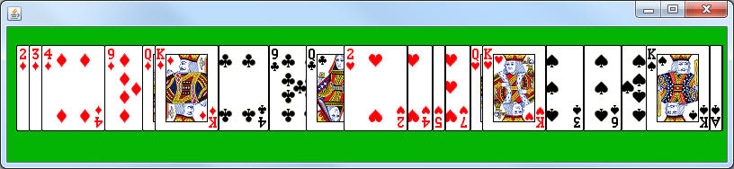
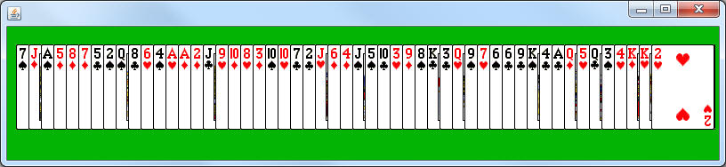

Previously you created a class named CardBoard that was responsible for removing FlipCards from an ArrayList one at a time. While the removal is nice, we will be extending this class and don't want to have it constantly happening. Go to the launch methods and remove the this.start() line. If you ever need to remove some cards, F1 is the SaccoObject's timer toggler. Run it one more time to make sure that the cards appear, but nothing happens.
Create a class named ShufflerBoard, which extends CardBoard. What we want is to override the onMousePress method so that any time the mouse is pressed, the FlipCards in the ArrayList are shuffled. Since we're inheriting and don't have direct access to the instance field, you first line should be the following:
ArrayList<FlipCard> cards = this.getCards();
To accomplish shuffling, you should first create a second ArrayList<FlipCard>. Use a while loop to repeatedly remove the FlipCard at a random location from the instance field ArrayList and simply add it to the end of the local ArrayList (don't forget that the remove method also returns the element, so you might need a local FlipCard variable as well). Once all FlipCard are in the local ArrayList, use the setCards method to assign it to the instance field.
To get the program running, add a static method named shuffleRunner, which constructs and launches a Shuffler object.
If you run the program at this point and click, you will see that we have run into a design flaw. The fact is that all of the cards in the ArrayList have their x and y already set. Putting them at a different location in an ArrayList will not change that location; it only means that they will be painted in a different order.

Back in the onMousePress method, make the last line a call to the inherited arrangeCards method. This should re-order them according to their place in the list.
